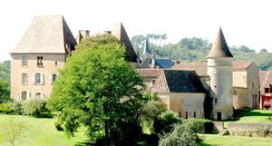
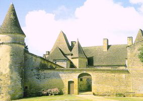
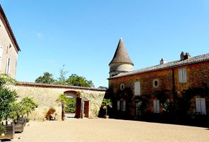
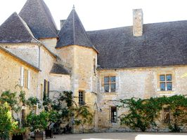
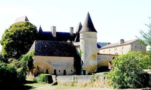
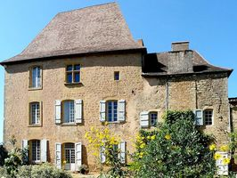
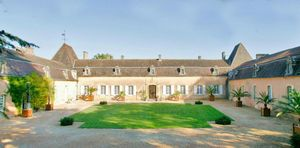
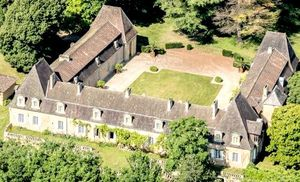

Recensement Jean-Claude Truffet
| Département | 24 — Dordogne |
| Canton | le Buisson des Cadouin |
| Commune | Urval |
| Type d'édifice | Château |
| Période d'origine | XIII-XV-XIX |
| Coordonnées GPS | 44° 48' 04" Nord et 0° 56' 57" Est. Bourlie grav de 1 à 6. Poujade grav 7-8 |








Deux châteaux à Urval, la Bourlie et Poujade. La BOURLIE, en 1356 passe par alliances de Jehanne de Commarques avec Jean de Saint-Ours, en 1674 l'héritière de la Bourlie Jeanne Suzanne de Saint-Ours épouse Jean de Montalembert. En 1808 revient aux Commarques par alliance de Jeanne de Commarque qui le possède toujours. Les héritiers du château de la Bourlie sont Cyril de Commarque, artiste passionné darchitecture et son épouse Ortensia Visconti di Modrone, écrivain. Tous deux philanthropes, amateurs dart et bons vivants bohèmes, ils insufflent naturellement leur vision décalée de la vie de château, dans une version du XXIe siècle.
POUJADE, une des plus imposantes chartreuses de Dordogne, érigée par la famille des Saint-Ours, vieille maison de noblesse sarladaise qui possédait, outre la seigneurie dUrval. Suzanne de Saint-Ours épousa, en 1672, Jean de Montalembert et, lui apporta une partie des biens de sa famille. Leur descendante et héritière, Marie-Suzanne, épousa le Marquis de Commarque, en 1806. Passée à la famille Greenwell, dont lhéritière Georgina épousa Raymond de Commarque, La Poujade revient ainsi dans le giron familial. Pendant la seconde guerre mondiale, Gérard de Commarque perdit la vie à Buchenwald. A cette époque, avec laccord de madame de Commarque mère, le quartier général de lEtat-Major inter alliés et André Malraux sétaient installés à La Poujade. Le musée du Louvre, le musée de Nancy, le musée Ingres de Montauban et le musée du grand duché du Luxembourg avaient en outre choisi La Poujade pour mettre à labri certaines uvres majeures de la peinture française. Le comte Hubert de Commarque, actuel propriétaire, continue de maintenir et de faire partager cette demeure, ainsi que le château de la Bourgonie. En 1972, il a racheté les ruines de la forteresse médiévale de Commarque, berceau de sa famille, quil a ouvert au public en 2001 et quil continue de restaurer.
La BOURLIE date du XIIIe XVe au XIXe siècle. Son propriétaire actuel est la famille de Commarque. La mention la plus ancienne du lieu sous la forme « la Borrelia » remonte à 1459. Aux XVIIIe et XIXe siècles, le château se dote de terrasses, d'un jardin et d'un parc. Après une première inscription le 13/11/1973 limitée aux M.H. des façades et toitures du château, le château et son domaine (ses communs, ses dépendances, son parc et ses jardins) sont inscrits en totalité aux M.H. le 12/09/2005. Le château se compose d'un corps de logis principal cantonné de deux pavillons carrés prolongé par une aile en équerre qui enserrent une cour, celle-ci est fermée sur son quatrième côté par un mur de cloture percé d'une porte cochère et d'une porte piétonnière défendue par une tour cylindrique coiffée d'un toit en poivrière, dans la cour une tour hexagonale du XIe siècle abrite l'escalier à vis. Le château est muni de solides défenses, des archères et des meurtrières sont percées dans les tours. POUJADE, le corps principal accueille la maison, tandis que les ailes abritent écuries, orangerie et chais. Lintérieur de la Poujade a gardé son caractère tout à fait exceptionnel : voûtes, pilastres, colonnes, huisseries, majestueuses cheminées Louis XIV, tout concourt à créer une ambiance intime et mystérieuse. Le château de la Poujade est classé aux M.H.
Poujade famille des Saint-Ours Famille Greenwell
"
A Urval; GPS : 44° 48' 04" Nord et 0° 56' 57" Est. Bourlie grav de 1 à 6. Poujade grav 7-8